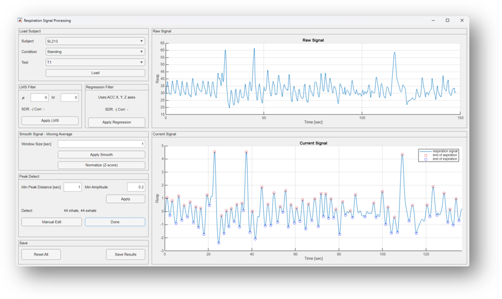
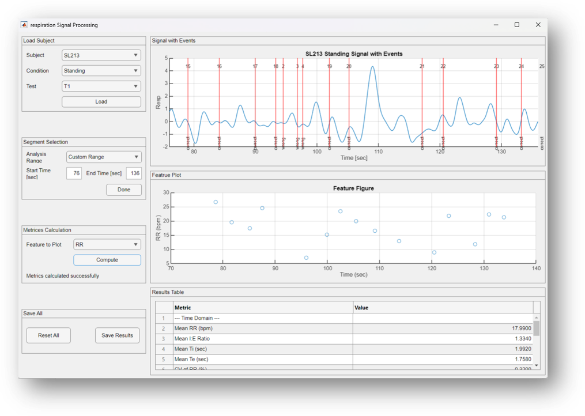
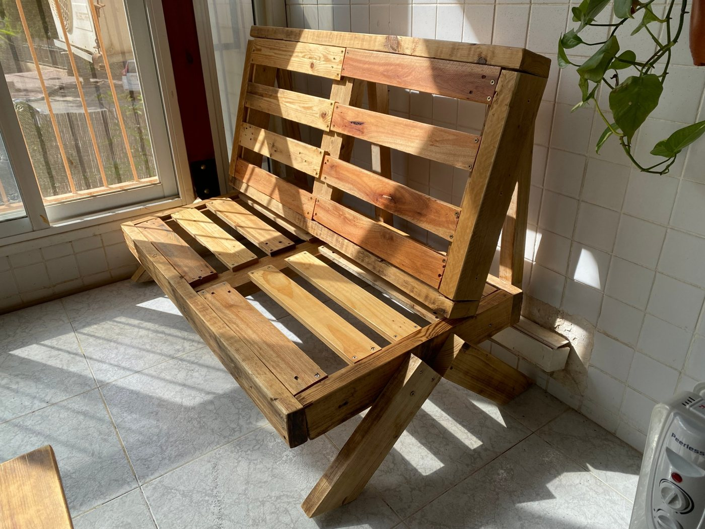
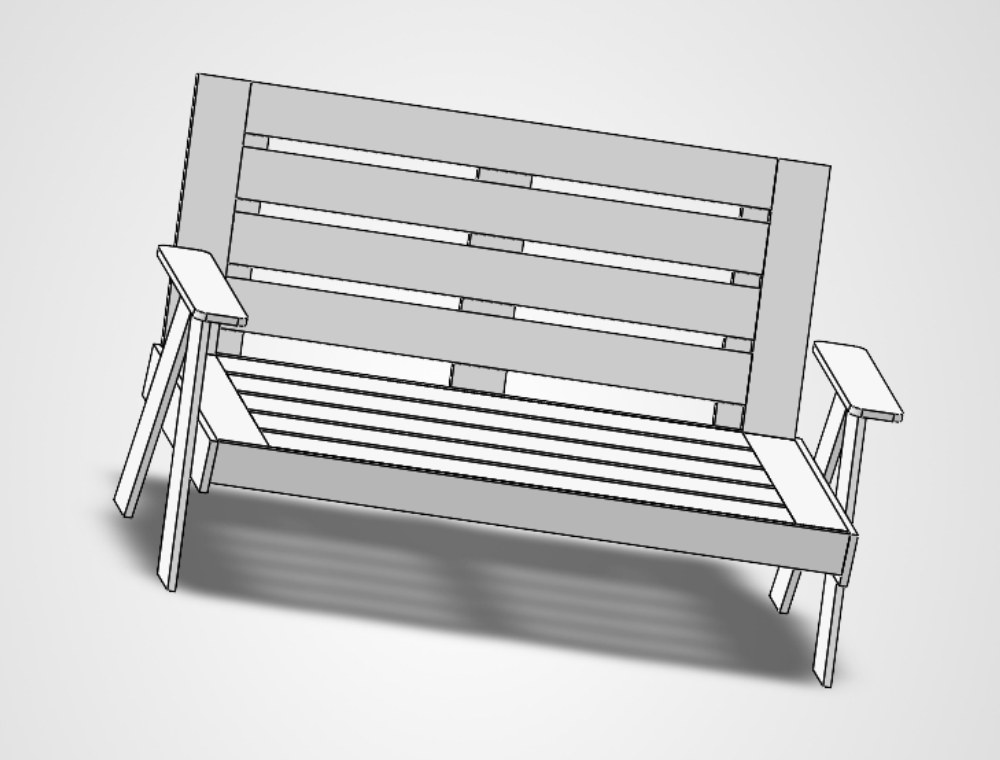
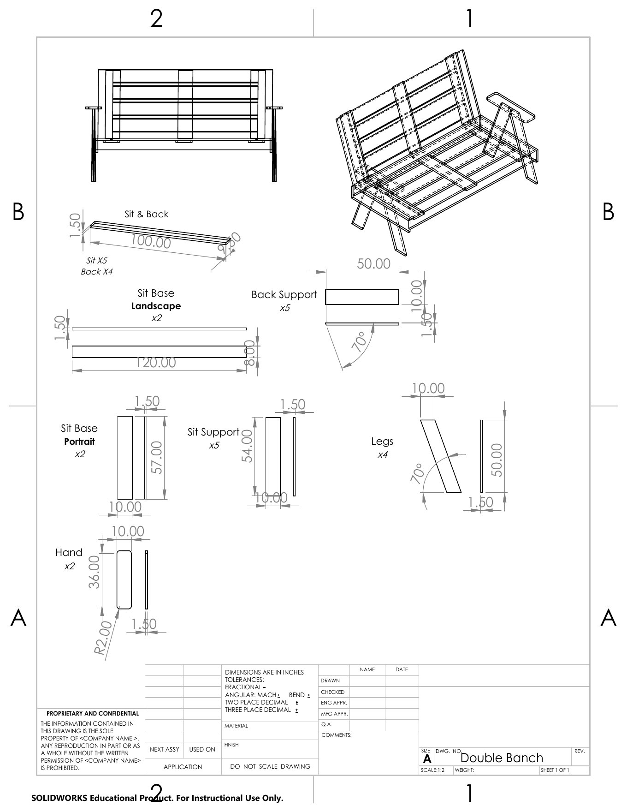
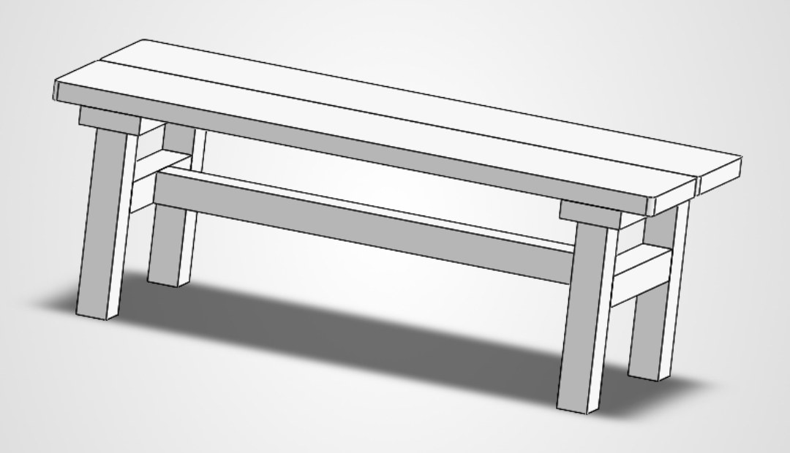
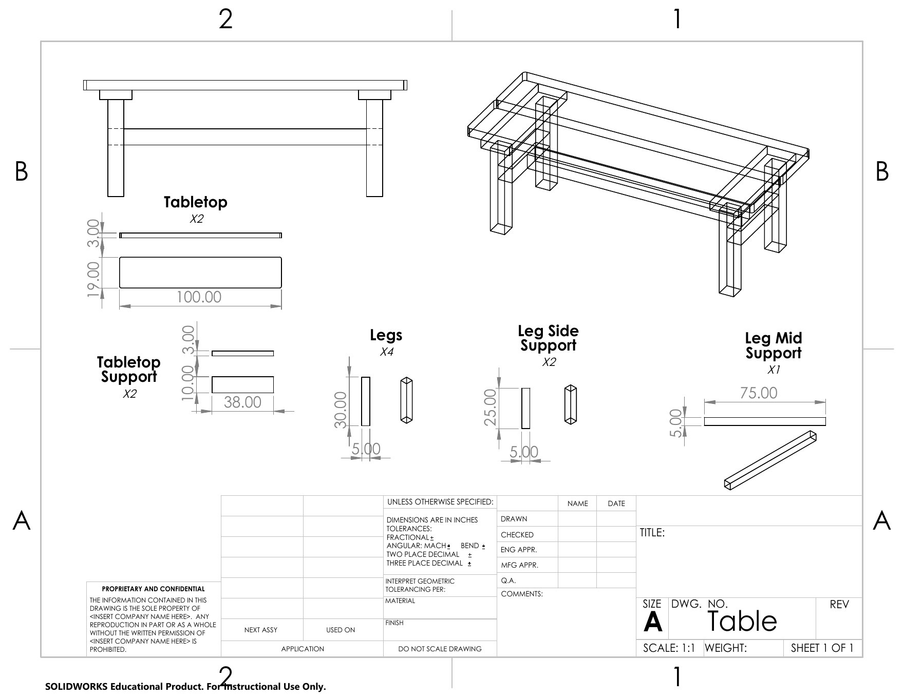
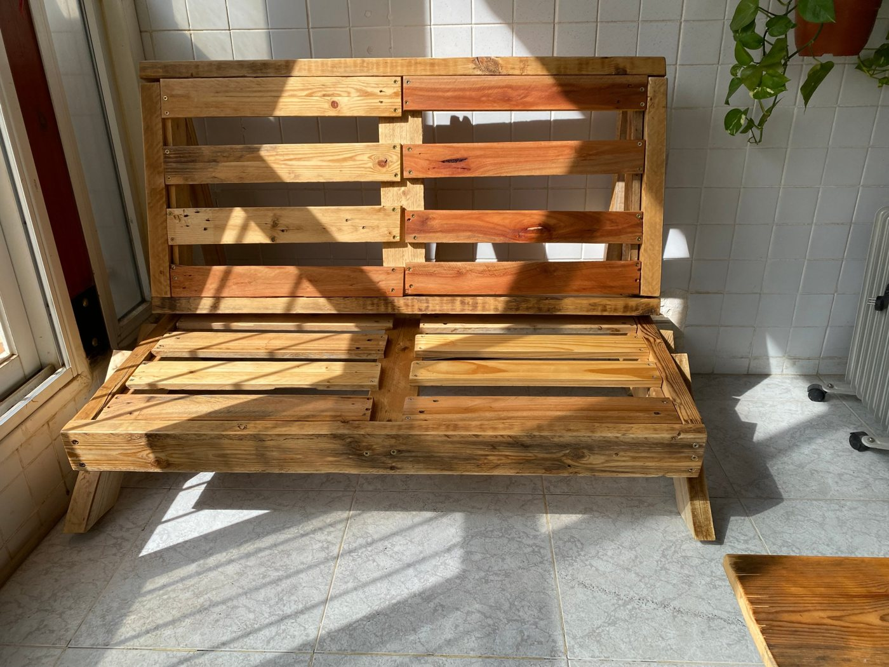

Biomedical Engineering graduate from Ben-Gurion University, specializing in signal processing. My studies combined signal processing, data analysis and human physiology, with additional coursework in biomechanics, robotics and neural networks.
About me
I’m a Biomedical Engineering graduate from Ben-Gurion University, specializing in signal processing, with additional training in biomechanics. My final project, conducted with the Plotnik Lab at Sheba Medical Center, investigated the effects of cognitive and motor load on respiratory patterns in a virtual reality environment.
I’m seeking opportunities in signal processing, data analysis or biomechanics. My skills include MATLAB and Python for signal processing and data analysis, as well as SolidWorks for 3D modeling, mechanical design and technical drawings.
Education
- Degree
- B.Sc. Biomedical Engineering
- University
- Ben-Gurion University of the Negev, 2022–2026
- Final project
- Respiratory dynamics in cognitive-motor dual tasking, Sheba Medical Center
- Courses
- Physiological signal processing, digital signal processing, control theory, neural networks, machine learning, digital systems, introduction to robotics
- Based in
- Israel
Breathing Under Load: Exploring Cognitive–Motor Dual Tasking
In our daily routine, we encounter situations where we perform multiple tasks. Walking while performing a cognitive task is an example of dual tasking, where two tasks compete for attentional resources. This project explored how cognitive and motor load, separately and together, affect respiratory patterns. Participants performed a virtual reality version of the Color Trails Test (VR-CTT) while standing and walking, allowing us to examine how breathing responds to different levels of task demand.
Study design · tap a condition
What I built · tap a step
Preprocessing GUI (MATLAB). DC removal, band-pass filtering (0.1–1 Hz), accelerometer-based LMS adaptive filtering for walking trials, smoothing, z-score normalization and peak detection, per 60-second segment.
Feature extraction GUI (MATLAB). 9 respiratory features across time, amplitude and frequency domains.
Data cleaning (Python). Robust MAD-based outlier detection per condition, with an adaptive log-transform for skewed features.
Statistics. Two-way repeated-measures ANOVA to assess condition, test and interaction effects, followed by model-based post-hoc comparisons using estimated marginal means.
9 features
Time domain 6
Amplitude domain 1
Frequency domain 2
Key finding
The project showed that respiratory signals capture changes associated with both cognitive effort and walking. Breathing rate alone did not tell the full story, but analyzing variability, amplitude and frequency-based features revealed that cognitive demands affected breathing differently during standing and walking. These findings demonstrate the value of combining multiple signal features to assess physiological responses during dual tasking.
The tools I built


Click a screenshot to enlarge it
Bench and table, from CAD to real wood
I designed a matching bench and table in SolidWorks, from individual parts to the complete assembly, and then built them using reclaimed wooden pallets that I cut and sanded into the required components. The bench measures 120 × 60 × 30 cm and the table measures 100 × 38 × 30 cm (W × D × H). Working with salvaged wood required adapting the design and adjusting parts during construction to accommodate the available material and ensure everything fit together.

- ModelParts and assembly in SolidWorks
- DrawDimensioned technical drawings
- Cut & sandPallet boards into components
- AssembleAdjusting parts to fit
SolidWorks model




Click an image to enlarge it
The finished product

Housekeeping Manager
Bills, plans, chores and the dog. One shared app for the whole house.
- Syncs in real time
- Works on any phone
- Built for two
Sound familiar?
Housekeeping Manager answers all of them, in one place.
Tap a feature to see it
How it’s built
- Type
- Single-page web app, mobile-first, can be added to the home screen
- Front end
- HTML, CSS, JavaScript
- Database
- Firebase Firestore, real-time sync between devices
- File storage
- Firebase Storage for bill photos, PDFs and documents
- Security
- Firebase Authentication with Firestore and Storage security rules
- Hosting
- GitHub Pages